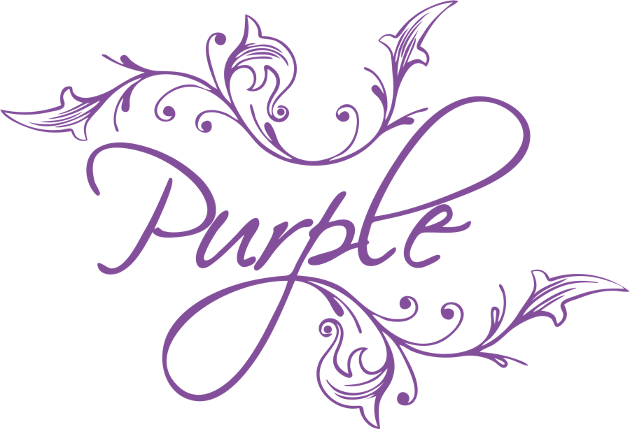

× AI SolutionsUma plataforma de produção feita à medida da PURPLE. Cada código de barras sabe o que consome, cada cuba sabe quantos litros tem, e os dois armazéns batem certo com as faturas. Quando chega uma encomenda, as contas e as compras aos fornecedores ficam prontas para o Fernando aprovar. Sem ir ao armazém confirmar.
| Componente | Precisa | Livre | Encomendar |
|---|---|---|---|
| Purple Box (caixa) | 360 | 40 | 500 |
| Copos gravados | 720 | 96 | 624 |
| Gin Elegant Dry 70 cl | 360 | 140 | 220a engarrafar |
A folha de Excel é boa, mas é se estiver atualizada. Vou ao stock físico confirmar.
Antes de dar seguimento a uma encomenda, o stock confirma-se no armazém, à mão.
Fernando SilvaChega hoje uma encomenda de 360 conjuntos. Temos de encomendar ao fornecedor mais 360 caixas e 720 copos.
O conjunto de Natal gasta o mesmo gin e a mesma garrafa, mais uma caixa e dois copos. As contas fazem-se à mão.
Fernando SilvaEu não posso encomendar só 360 tampas brancas. Tenho de encomendar no mínimo 1.000.
Tampas, rolhas, aromas: cada fornecedor tem o seu mínimo. Do aroma de laranja, nunca menos de 1 L.
Fernando SilvaPrimeiro gerimos litros. Depois, através de uma ordem de engarrafamento, transformamos em garrafas.
Matérias-primas, líquido nas cubas, produto acabado. O líquido pode ficar na cuba um mês antes de ser engarrafado.
Fernando SilvaNão é por eu vender uma garrafa no site que vou produzir mais uma garrafa.
Por isso a loja online tem stock à parte. As 300 que sobram de um lote de 2.000 passam para o site.
Fernando SilvaSó podemos dar entrada no stock quando chegar a fatura do fornecedor.
E a saída é a vossa fatura de venda. O IEC e o IVA de cada garrafa já estão bem tratados no InvoiceXpress.
Fernando SilvaHoje é o Fernando que faz tudo isto. O tempo mais valioso da empresa vai para contas que um sistema pode fazer sozinho.
Sem subscrição genérica pensada para adegas: uma plataforma vossa, alojada na cloud, que conhece o IEC, os teores e as composições de cada gin.
Os produtos, os teores e os códigos de barras são os vossos. Os clientes, os fornecedores e as quantidades são inventados. Os botões funcionam: aprove uma encomenda e veja as ordens, as reservas e as compras a mudar.
Produtos, teores, volumes e preços de loja: os do vosso site. Clientes, fornecedores, stocks, custos e gramagens: ilustrativos, os reais vêm do vosso Excel e das composições que nos enviarem.
Continua a emitir as faturas, com o IEC e o IVA de cada garrafa. A plataforma lê as faturas emitidas e dá baixa no armazém de produção.
Continua a ser a loja. Cada venda no site dá baixa no armazém da loja online e não dispara produção.
As encomendas e os pedidos de orçamento continuam a chegar como hoje. A plataforma lê-os, faz as contas e prepara tudo para aprovar.
O Fernando deixa de calcular. Continua a decidir.
Fica escrito para não se perder. Assenta nos artigos e no stock desta plataforma, por isso nada se refaz.
Quem deixa um gin no carrinho recebe uma mensagem a lembrar, para dinamizar a loja.
Depois de uma compra, a sugestão de uma segunda garrafa, com o desconto calculado no Jumpseller.
Gin com água tónica e águas de sabores. Os artigos novos criam-se na plataforma com a sua composição, como os gins de hoje.
Os valores indicativos da reunião de 13/10. Ficam fechados na proposta.
Módulo à parte: os clientes regulares veem o histórico, as faturas e os orçamentos, e repetem uma encomenda.
Uma manutenção pequena, em avença mensal ou bolsa de horas, como for mais confortável para vocês.
Uma plataforma vossa, sem custo por utilizador e sem ficar presa a um software genérico.
As composições de cada código de barras, a folha de Excel do stock, os fornecedores e os mínimos de cada um, e os acessos ao InvoiceXpress e ao Jumpseller.
Artigos, cubas, armazéns e movimentos. Depois a leitura das encomendas e os orçamentos de marca própria.
Lado a lado com o Excel, até os números baterem certo com o armazém.
A equipa trabalha na plataforma. O Fernando aprova em vez de calcular.
Para começar só precisamos de uma coisa: a composição de um ou dois produtos (matérias-primas e componentes) e a folha de Excel do stock.